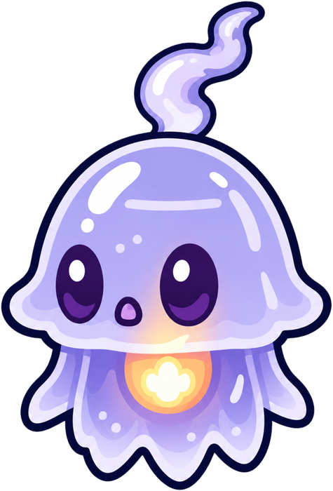

 Ghost
Ghost Fire
FireTap a stage to read its story.
Lumoxling is a tiny floating sprite - a round lavender ghost-head with wide happy eyes and a small flame-wisp curling from the top. It has no arms or legs, just two short trailing wisps beneath it and a soft violet glow around its body. It hovers near the lower vents of Dragon Spire, drawn by warmth, and loves to drift in the updrafts of slow steam columns. Guardians who camp at the Spire's base often wake to find one perched on a boot, watching the campfire with total absorption.
Field note: Lumoxling's flame-wisp flickers a different color for each emotion - yellow for curious, red for startled, cool blue when it is dreaming.

Dragon Spire. Lumoxling drifted all the way past the Five Lands. Help Lumoxling find the way home!
Far beyond the Five Lands.
Personality: Clever
Signature move: Glow Float
Do jellyfish have bones?
Share a Bond Food that matches its types to become friends. Lumoxling loves:
A Bond Food is not a trick. It joins your spirit with the Kimuro's spirit, and only when it chooses you.
Mazes, puzzles, cards and a Bond Mark medal in the printable Dragon Spire adventure.
Print the adventure